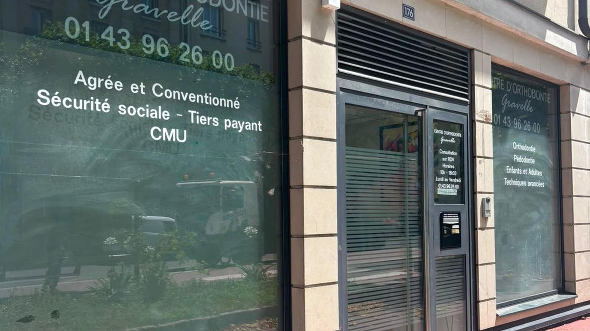

Le Centre d'Orthodontie Gravelle accueille les habitants de Maisons-Alfort (94700) à Charenton-le-Pont, à quelques stations de métro seulement.
Maisons-Alfort et Charenton-le-Pont sont reliées par la ligne 8 du métro : depuis les stations Maisons-Alfort, il suffit de quelques arrêts pour rejoindre Charenton-Écoles, à deux pas du cabinet, au 176 rue de Paris.
Les Dr Jessica Marciano et Dr Marie-Hélène Rit-Guyomard y suivent enfants, adolescents et adultes, avec des traitements modernes et confortables.
Prendre rendez-vous
Le cabinet se trouve au 176 rue de Paris à Charenton-le-Pont. En métro, la ligne 8 relie directement les stations de Maisons-Alfort (Les Juilliottes, Stade, École Vétérinaire) à Charenton-Écoles. Vous pouvez aussi venir en voiture ou en bus selon votre quartier.
Une prise en charge complète, pour tous les âges.
Dépistage dès 6-7 ans, appareils fixes ou amovibles pour guider la croissance.
En savoir plus →Il n'y a pas d'âge pour aligner ses dents : solutions discrètes et efficaces.
En savoir plus →Des gouttières transparentes et amovibles, quasi invisibles au quotidien.
En savoir plus →Deux orthodontistes spécialistes, un plateau technique moderne (empreinte numérique 3D, radiologie), un accès direct par la ligne 8, le tiers payant et la Complémentaire santé solidaire (CMU) acceptés. Un suivi de qualité, sans avoir à aller loin dans Paris.
Prenez rendez-vous en ligne ou par téléphone, on s'occupe du reste.
Rendez-vous en ligne 01 43 96 26 00